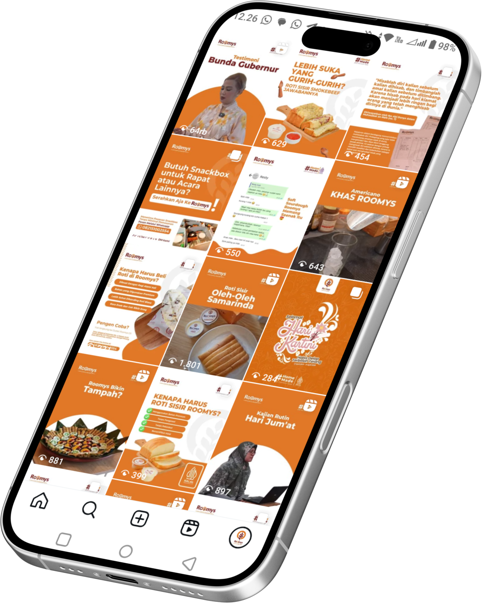

Konten visual harian menjaga Roomys tetap satu suara di feed.
Grid Instagram yang selalu terisi: feed, story, dan promosi menu disiapkan dengan tempo rilis yang tidak bolong.
- Sebagian konten menembus puluhan ribu tayangan secara organik

Grid IG, dikelola harianDESAIN